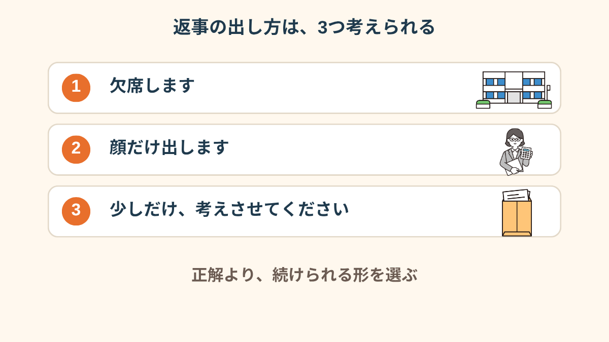
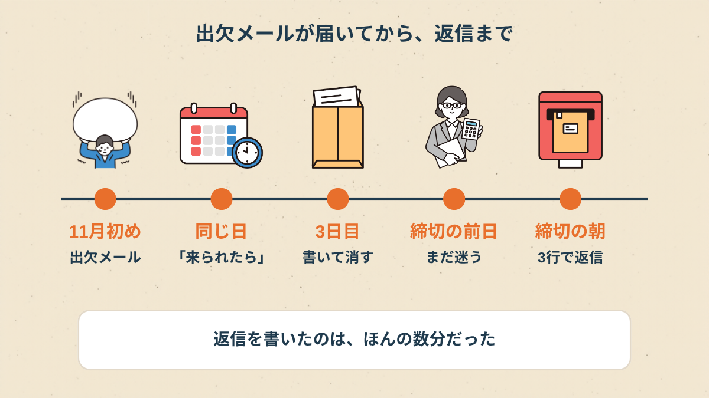
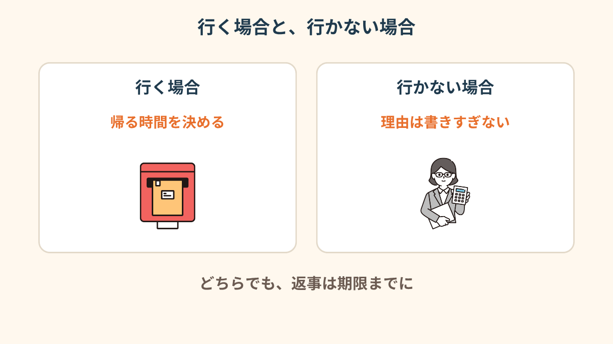
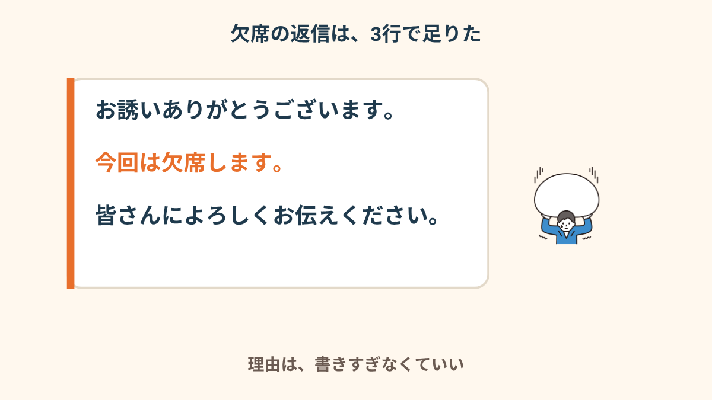
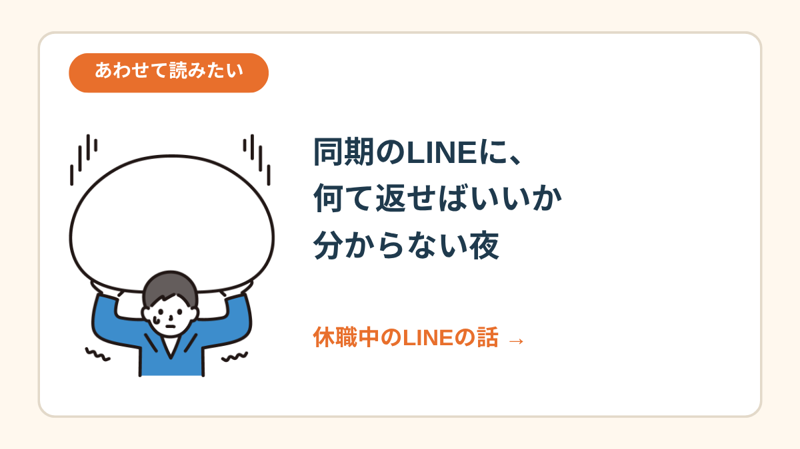
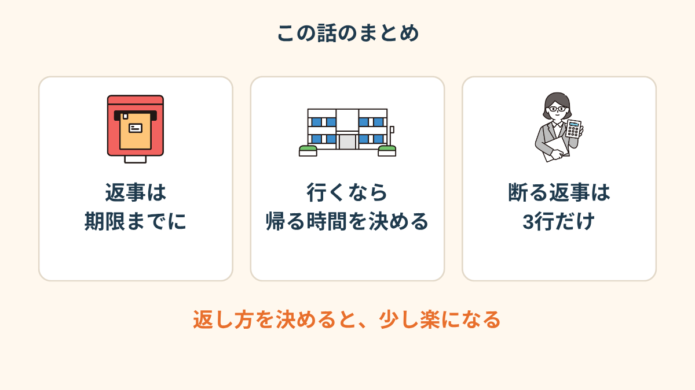

宛先の欄に、休職中の私の名前もちゃんと入っている。
いちばん下に、一行だけ。
「来られたら、ぜひ」
その一行を、3日間、読み返していた。
「来られたら」の4文字が、頭から離れない
休職して4ヶ月目でした。
会社のメールは、ほとんど開かない日が続いていて。
その日はたまたま、昼過ぎに開いただけです。
「行きたくない」だけなら、まだ楽だったんです。
でも、そうでもなくて。
同じ部署の人たちには、会いたい気持ちも、ちょっとある。
会いたいのに、会うのが怖い。自分でも意味が分からない。
「来られたら」って、来られるなら来てね、ということですよね。
優しい言い方なのは分かってる。分かってるのに、「来られない私は、来られない人になる」みたいに読めてしまった。
休職してから、文字の裏を読むクセがついてしまいました。
「行きたくない、とは違うんですよ。会いたいのに、顔を合わせる自分が想像できない。その感じが、ずっと胸のあたりにありました」
返事は3通り、どれも間違いじゃなかった
寝る前に、返事の選択肢を紙に書き出してみました。
出ます。顔だけ出します。欠席します。
あと、「少しだけ、考えさせてください」というのもある。

書いてみて分かったのは、どれを選んでも、失礼にはならなさそうということでした。
締切の前に、ちゃんと返事をしてさえいれば。
（ここは会社の雰囲気にもよると思います）

私は結局、3日目の夜に、書いては消して、また書いて。
締切の前日になっても決まらず、翌朝、3行で送りました。
悩んだ時間のほうが、返事を書いた時間より、ずっとずっと長かったです。
行くなら、帰る時間だけ先に決める
最初の晩は、行くほうに気持ちが傾いていました。
「顔だけ出して、サッと帰ればいいんじゃないか」と。
でも、そのときの私は、夜の7時を過ぎると頭が回らなくなっていました。
それを思い出して、行くとしたら、先に帰る時間を決めておくことにしました。
8時には席を立つ、と決めて、幹事さんにだけ先に伝えておく。そんな形です。


欠席の返事は、3行で足りた
結局、私は欠席にしました。
理由を書こうとすると、体調のこと、気持ちのこと、全部書きたくなってしまって、また夜が潰れる。
だから、書かないことにしました。

送ったのは、本当にこれだけです。
「お誘いありがとうございます。今回は欠席します。皆さんによろしくお伝えください。」
会社によって受け取り方は違うと思うんですが、私のところでは、幹事さんから「了解です、また落ち着いたらぜひ」と一行返ってきただけでした。
「理由を書かなかったら、逆に変に思われるかなって。でも、書いたら書いたで、体調のことを根掘り葉掘り聞かれそうで。結局、短いのを送って正解でした、私の場合は」
送ったあとの夜のこと
送信ボタンを押した直後は、ほっとしました。
でも夜になって、「やっぱり行けばよかったかな」が顔を出した。
どっちを選んでも、あとから少しは揺れるんだな、と思いました。
揺れること自体は、たぶん普通のことです。
返事を出したあとの揺れは、もう「返事が間違っていたから」ではなく、「気持ちが揺れる時期だから」なんだと思うことにしています。
「送ってから3日くらい、『行けばよかった』と『行かなくてよかった』が交互に来ました。でも、来年の今ごろはどっちでもいいことになってる気がして、ちょっと気が楽になりました」

休職中の同期とのLINEの話 →
この記事に、聞いてみたいことはありますか？
「自分の場合はどうなんだろう」と思ったことを、気軽に書いてみてください。いただいた質問は個別にお返事したうえで、匿名で記事にすることがあります。